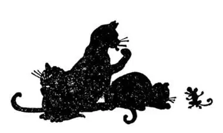
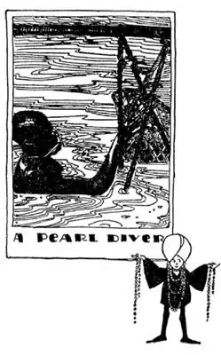

54
The Lion and the Sun
狮子和太阳

HAVE you ever seen a Persian cat? They are big, beautiful animals with soft thick hair. They come from Persia.
Persia is one of those “once-was” or “used-to-be” countries too. It used to be the greatest country i. t. w. W. , yet many people now do not even know exactly where Persia is and can’t even find it when they look for it on a map—for the Persian name for Persia is Iran and most maps now say Iran instead of Persia. As I look around me in my home where I’m writing this, I find, to my surprise, I can count nearly a dozen things that have come from Persia or are connected with Persia, though before I began to count I should have said not a single thing Persian did I own.
The rug at my feet was made in Persia, entirely by hand. It was woven of woolen threads in beautiful colored designs and must have taken some Persian many months, perhaps a year or more, to make. Some Persian rugs are said to have taken one person the whole of his lifetime to make.
My wife has a silken shawl also woven by hand in Persia. The silkworms were raised there, the cocoons unwound, the silk spun into thread, dyed in many colors, and then woven into this shawl.
She has a ring set with greenish blue stones, called Turquoises. A turquoise is the birth-stone of December, and they also come from Persia. In some countries of the East people wear turquoises to keep away what is called the “evil eye.” They believe that some persons can do them harm by looking at them, and the turquoise prevents this “evil eye” harming them.
On my wife’s dressing-table is a small thin bottle of perfume called attar of roses. In some parts of Persia they grow the most beautiful and fragrant roses and from their petals this perfume is made.
I have a scarfpin in which is a pearl that came from an oyster that was brought up from the bottom of the Persian Gulf by a naked diver.
My bath slippers—big, sloppy slip-ons, with heels turned down—are Persian.
The electric light I am writing under is a Mazda lamp, and Mazda was the old Persian god of light.
In my bookcase is a book called “The Rubάiyάt.” It is a book of poetry written by a Persian named Omar Khayyάm.
For breakfast I might have had a melon, and melons were first grown in Persia. Our melons are grown from seeds brought many years ago to this country from Persia.
What I did have for breakfast were peaches, and these too were first grown in Persia. Peach-stones were brought to this country and from these our first peach-trees were grown.
If I had a Persian cat this would complete the picture, but I have a dog instead.

Persia is called the Land of the Lion and the Sun, and the Persian flag has a lion and a sun on it. I do not know why there is a lion, but the sun is on it because the people of that country used to worship the sun. The sun was their god. They also worshiped the stars, moon, and fire, so we call them fire-worshipers, but they call themselves Parsees. The fire-worshipers’ chief god was called Mazda and that is where we get the name for our electric-light bulbs. According to their religion, everything that was light was good and everything that was dark was bad. A few Persians are still fire-worshipers, but most are now Mohammedans.
The good part of Persia, like the little girl who had a little curl, is very, very good, but the bad part is horrid. In the part that is good, beautiful roses, fine melons and peaches grow, but much of Persia is desert. Most rivers get bigger and bigger as they flow along, but the Persian rivers get smaller and smaller and at last dwindle away to nothing. There are a great many mountains in Persia, and when the melted snows come down from these mountains they form streams, but many of these streams do not empty anywhere; they just dry up; they have no mouths.
Did you ever play charades? Here is a word we used to act out when I played charades, though we pronounced the word incorrectly. In the first act two girls would play drinking tea. In the second act a boy would run across the room. The two acts made the capital of Persia. Can you guess it? It is “Tehran.” Another charade can be acted out in only one act. A boy runs across the room and then points to himself. Can you guess this one? It is “Iran,” the Persian name of the country.
The ruler of Persia is called, not a king, but a Shah. Once upon a time the Shah could do anything he wished with his people. He could take all their money away from them and put them to death, if he wished to do so; but all that has long been changed. In Tehran is the most famous jeweled throne in the World. It is called the Peacock Throne. It is made of solid gold and the back is in the form of a peacock’s tail studded with rubies, emeralds, and sapphires—red, green, and blue precious stones.

潜水采珠人
He can hold his breath twice as long as you can
他屏气比你长一倍
All jewels, such as diamonds, rubies, and emeralds, come out of the ground—all except one. But one jewel does not come out of the ground. It comes out of the water, out of an oyster. This jewel is the pearl. The oyster makes a pearl around a grain of sand that has gotten into his shell and annoys him. So at the center of each pearl is a tiny grain of sand. It takes an oyster four or five years to make a pearl the size of a pea. In the Persian Gulf the finest pearls are found. The oysters are not good to eat, but are gathered for the pearls that are to be found in them. Men dive for the oysters, staying under the water long enough to go down to the bottom, gather a basket of oysters and come up to the top—as long as they can hold their breath. You can probably hold your breath only half a minute, but a pearl-diver can hold his for a minute or longer, and it is said that some have been able to do so for an hour—but that is a fairy-tale. A little boy wrote this composition telling how it is done: “They clamp clothes-pins on their noses and stuff wax in their earses to keep out the waterses. Then they fasten heavy stones to their feetses and jump overboard from small boatses.” Many pearl-divers lose their lives each year. They burst a blood vessel or are drowned or stung to death by a poisonous fish called the ray. But millions of dollars’ worth of pearls are gathered each year to ornament the necks and fingers of queens and ladies all over the World.
【中文阅读】
你见过波斯猫吗？体型较大，非常漂亮，长着又柔又厚的毛，产自波斯。
波斯也是那些“有过昔日辉煌”的国家之一，它过去是世界上最伟大的城市。然而现在很多人甚至都不知道它确切的位置，他们就是在地图上也找不到它——因为“波斯”的波斯语名字是伊朗，现在大多数地图上标的是“伊朗”，而不是“波斯”。在家里写到这儿的时候，我环顾四周，惊讶地发现我竟能数出差不多十几样来自波斯或者与波斯有关的东西，不过，不数一数的话，会说我没有一件东西是来自波斯的。
我脚下的地毯是波斯制造的，用羊毛线纯手工编织而成，上面有漂亮的彩色图案，某个波斯人一定编织了好几个月甚至一年多的时间才完成。据说，有些波斯地毯需要一个人一生的时间才能织完。
我妻子有一条丝质的披肩，也产自波斯，纯手工做的。波斯人养蚕，抽茧出丝，再纺成线，染成各种颜色，最后织成披肩。
她有一个戒指，上面镶有青绿色宝石，叫做“绿松石”。绿松石是象征十二 月份的诞生石，也产自波斯。在东方的一些国家，人们佩带绿松石是为了远离所谓的“邪恶的目光”，他们认为有些人看他们时会给自己带来伤害，而绿松石可以防止这些“恶目”伤害自己。
我妻子的梳妆台上有一小细瓶叫“玫瑰油”的香水。波斯一些地方种植极为美丽、芬芳的玫瑰并用其花瓣来制作这种香水。
我有一个领带夹针，上面有一颗珍珠，这颗珍珠就来自波斯海湾海底的一只牡蛎，而这只牡蛎是由一个赤身裸体的潜水员捞上来的。
我沐浴时穿的拖鞋——一双又宽又肥的无扣便鞋，后跟很低——是波斯产的。
我写作时用的台灯是玛兹达灯，而玛兹达则是古代波斯的光明之神。
我书橱里有本书，书名叫《鲁拜集》，是一位名叫“欧玛尔 · 海亚姆”的波斯人写的诗歌集。
早餐我有可能会吃一个甜瓜，甜瓜最早是在波斯种植的，我们的甜瓜就是由多年前从波斯传来的种子种植出来的。
我早餐吃的桃子也是最早在波斯种植的，桃子的果核被带到美国后，由这些果核种植出我们的第一批桃树。
如果我有一只波斯猫，那么与波斯有关的各种东西都有了。但是我只有一条狗，没有波斯猫。
波斯被称作是“狮子和太阳之地”，波斯的国旗上有一头狮子和一个太阳。我不明白为什么会有狮子，但是上面有太阳是因为那个国家的人们过去崇拜太阳。太阳是他们的神。他们还崇拜星星、月亮和火，所以我们称他们是“拜火教徒”，但他们称自己是帕西人。拜火教徒信仰的主神是玛兹达，这就是我们的电灯泡借用的名字。根据他们的宗教信仰，凡是光明的东西都是好的，凡是黑暗的东西都是坏的。有一些波斯人仍是拜火教徒，但大多数现在都是伊斯兰教徒。
波斯条件好的地方，就像长着小鬈发的小女孩，非常非常美好，但条件差的地区就很糟。好的地方长着美丽的玫瑰花、甜蜜的瓜果、桃子，但波斯很多地方是沙漠。大多数河流总是越流越宽，但是波斯的河流却是越流越窄，直到最后完全消失。波斯有很多高山，山上的雪融化，流下来形成小溪，但是这些小溪并没有流入到什么地方，只是都干涸了，根本没有河口。
你有没有玩过字谜游戏？有个词，小时候玩字谜游戏时，我们常常把它表演出来让人猜，不过这个词的发音我们读不准。第一幕两个女孩表演喝茶，第二幕一个男孩跑着穿过房间。这两幕演的就是波斯的首都。你能猜到吗？就是 “德黑兰”。另外一个字谜游戏只需一幕就能表演出来，一个男孩跑过房间，然后指着自己。你能猜对这个吗？是“伊朗”，就是这个国家的波斯语名字。
波斯的统治者不叫国王，而叫“沙”。从前，沙可以对他的人民为所欲为。他可以没收人们所有的财产，再把他们杀掉，只要他想这么做。但现在这一切早已改变了。德黑兰有世界上最著名的宝石御座，叫做“孔雀宝座”。它是由纯金制成的，靠背形似孔雀的尾巴，上面镶有一颗颗珍贵的红宝石、绿宝石、蓝宝石。
所有的宝石，如钻石、红宝石、绿宝石都来自地里，只有一个例外，有一种宝石不是来自地里，它来自水里，产自牡蛎，这就是珍珠。牡蛎的贝壳进入一粒沙子，就会让它不舒服，于是，围绕这粒沙子就慢慢形成了一颗珍珠。因此每颗珍珠的中心都有一粒小沙子。一只牡蛎需要花上四五年的时间才能形成一颗豌豆大小的珍珠。在波斯湾人们发现了世上最好的珍珠。牡蛎并不适合做食物，但是采集牡蛎是为了在它里面找到珍珠。人们潜入水中采集牡蛎，尽可能久地屏住呼吸，好在水下停留足够长的时间，采到一篮子的牡蛎，再回到水面上来。你大概只能屏住呼吸半分钟，但是潜水采珠人至少可以屏气达一分钟。据说，有些人能屏气达一小时之久——但那是瞎说的。一位小男孩写下这样一篇作文，告诉人们如何能做到这一点：“他们用衣夹夹住鼻子，用蜡塞住耳朵防止进水，在脚上绑上大石头，然后从小船上跳下去。”每年都有很多潜水采珠人丧生。他们或爆了根血管而死，或者溺水身亡，或者被一种叫做“鳐”的有毒的鱼刺伤而死。但是，每年价值数百万元的珍珠被采集上来，佩戴在全世界各国女王和女士的脖子上和手指上。